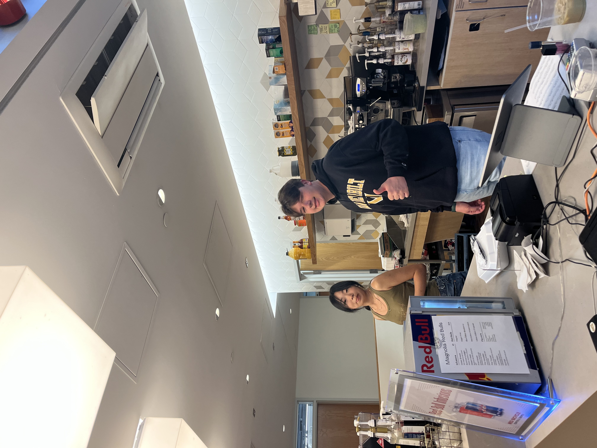
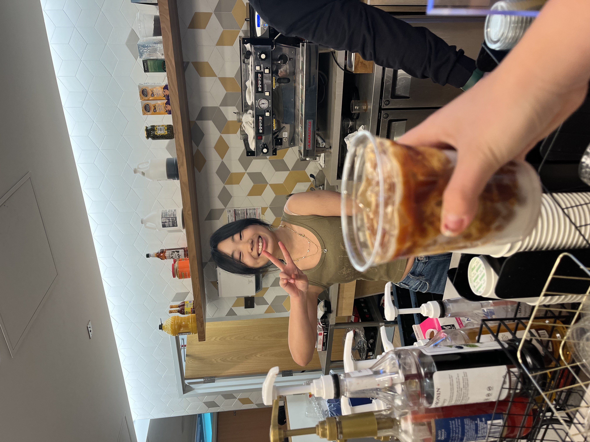
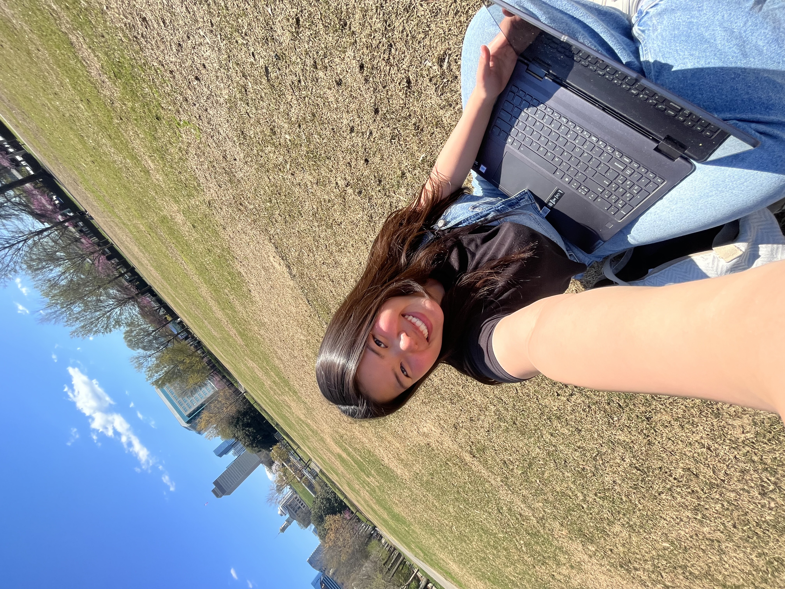
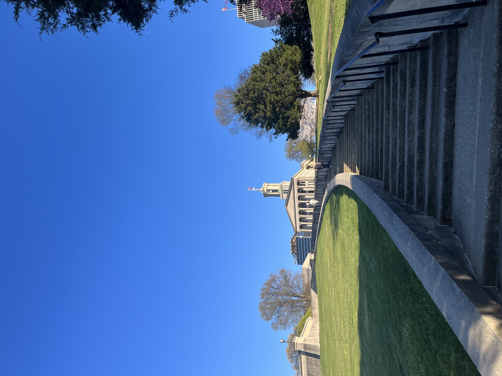
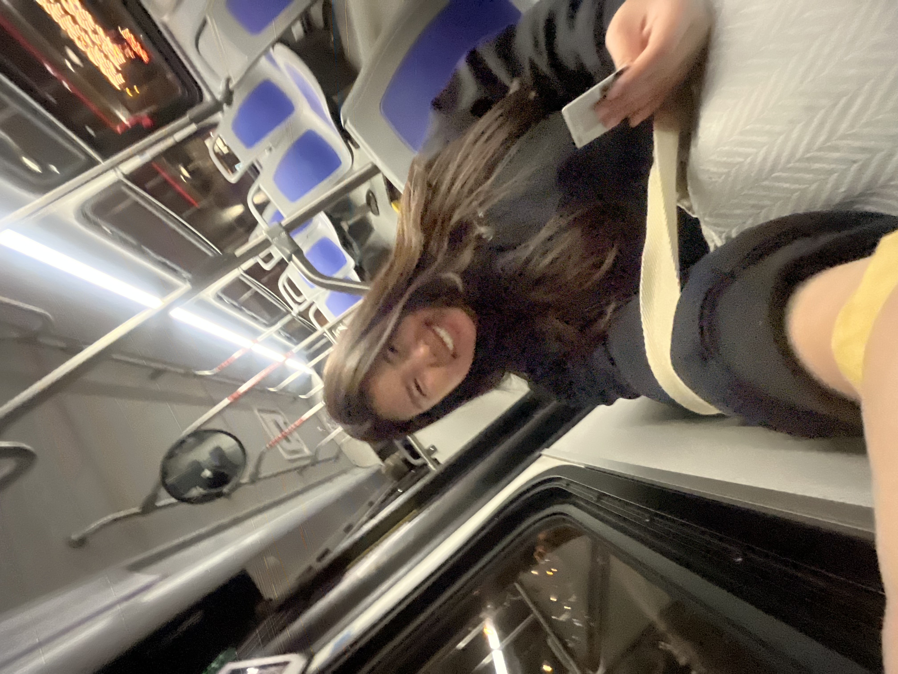

Wednesday, March 26
Woke up bright and early for some coffee at Red Bicycle cafe. Most importantly to visit my fav barista Claire Lee :D Had a lovely surpise, because Cade also had the same shift!

Cade & Claire

Coffee with Claire
Took some clips for a reel, just in case they become a potential client ahaha. Loved the vibe of the greenery!
Never done a rolled ice-cream class but saw it all over my Insta reels. It's impressive to see that the founders are young entrepeneurs, and according to their website, they are the first in the US to have a rolled ice-cream truck! Like happenstance, met a mom blogger from Chicago, Melissa Diep, so it wasn't ackward at all the grab content. Lights, camera, action! Our R4E instructor went into teachers mode.
Killing two birds with one stone, I had also texted Lustful Baths that I was coming by to grab some content. The girls there were super nice! Building something from scratch is really hard, and as an aspiring entrepreneur myself I can't decide whether I want to do product-based startup or have it AI-based now that I'm studying CS.
Time check...4:30PM and next event is at 6PM
Study Sess

The Climb
With my rolled ice-cream and apron, I laid out in the grass to do some work. Ideal life is to do this everyday and go for runs too. Bicentennial really is a vibe. The Arcade Avenue was only a 15 minute walk away so I climbed up the Tennessee state house stairs, saw the WeGo stations, and lowkey sketchy area.
Third Client - AirMax PartyI have to be honest with myself, I love meeting new people and talking to them, but I'm also not an extrovert extrovert. Even with my Urbaanite crewneck, it's weird going up to people. Saw the TNT Goods Jessica and Simone again, love familiar faces, and talked to many artists. I think highlight of this event was when I was leaving for the bus ride home I got a text from Ashley that she loves the content I'm making. Maybe my first ever direct compliment from her, plus it was a text message!
Home :D
Bus Ride Home
Troxel sustainability advocacy, took the bus home! There's just not many people that take it because the system sucks. You never know when the bus will actually come, or if it will just pass by you without stopping. Routine life, called my mom and told her about my day. Called my grandparents too as I always do that on days when missing home hits hard. For the first time, it felt like college is colleging in an adult successful way.